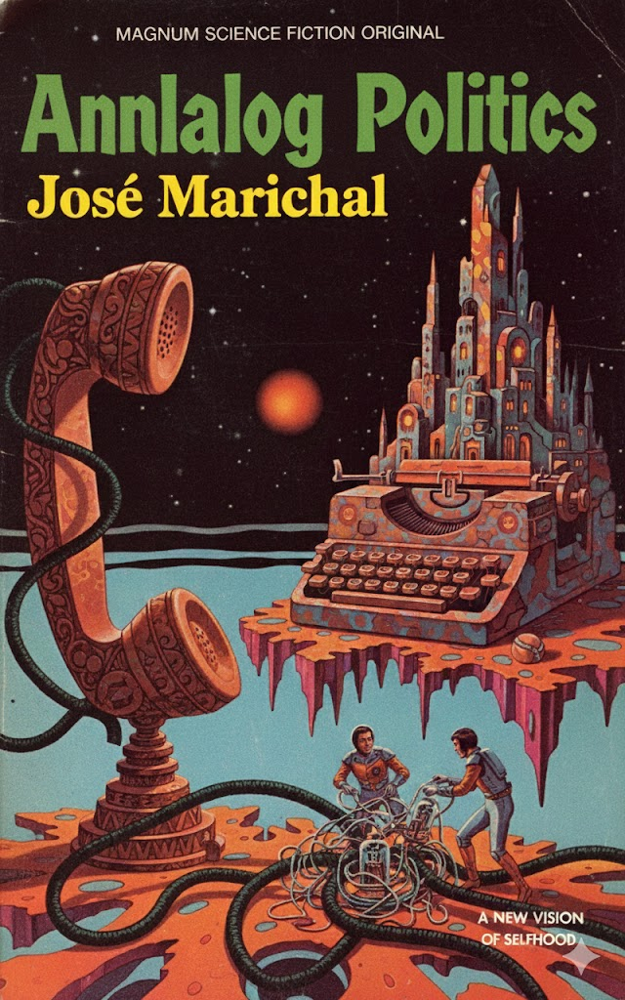
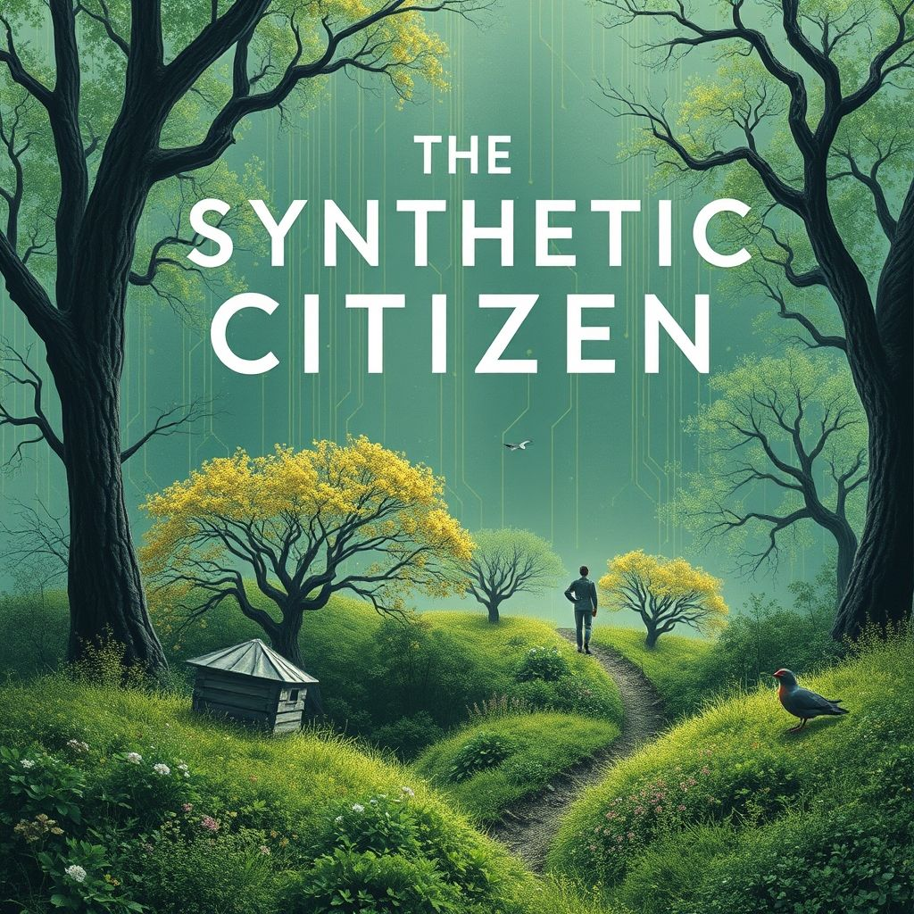

Participatory AI Lab Projects
A Hub at California Lutheran University
The lab explores ways in which AI tools can be deployed to promote creative, curious human beings, grounded in a set of ethical convictions and prepared to use and create technology that engages the world on those terms and to challenge technological deployments that do not engage the world in ethical ways. PAI-L at CLU explores the use of AI to solve societal problems.
PAI-L at CLU is convened by Dr. Jose Marichal.


Analog Politics
Can going analog become a social movement?

Unaccountable AI
Should we let AI go rogue?

Techno-Pessimism
Are we better off not expecting too much from AI?
Pluralist AI
Can AI make democracy more, not less expansive